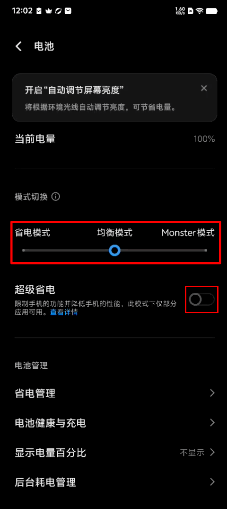
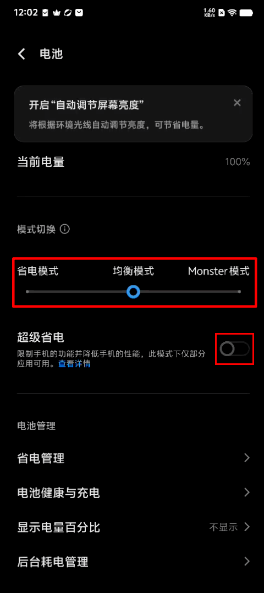
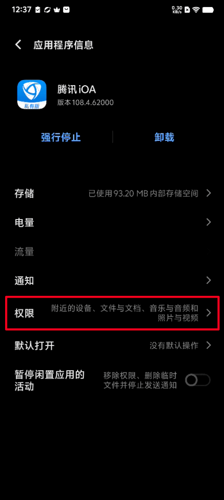
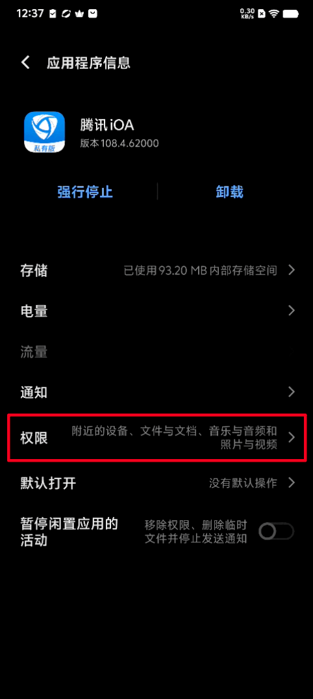

* How to Set Application Background Running on vivo Phones (OriginOS 4)
1. [Lock Background Task] (Anti-kill)
Open the iOA interface —— Return to the desktop —— Swipe up from the bottom of the screen (click the multitasking button if there is a navigation bar) —— Enter the multitasking page —— Find iOA and gently slide down to pause —— A lock icon appears in the upper right corner indicating successful locking.


After locking, you can avoid clearing iOA when clicking  .
.
However, please note that if you drag the iOA window in the multitasking page alone and swipe up, iOA will still be cleared.
2. [Close Power Saving Mode]
Open i Manager —— Utility Tools —— Battery Management —— Switch to Balanced Mode or Monster Mode / Close [Super Power Saving] (if enabled)
 

3. [Background Power Consumption Management]
Settings —— Applications —— Application Management —— Find iOA and click —— Battery —— Background Power Consumption Management —— Select [Allow Background High Power Consumption]


4. [Background Startup]
Settings —— Applications —— Application Management —— Find iOA and click —— Permissions —— All Permissions —— Turn on [Auto Start], and it is also recommended to turn on [Associated Startup]


 
